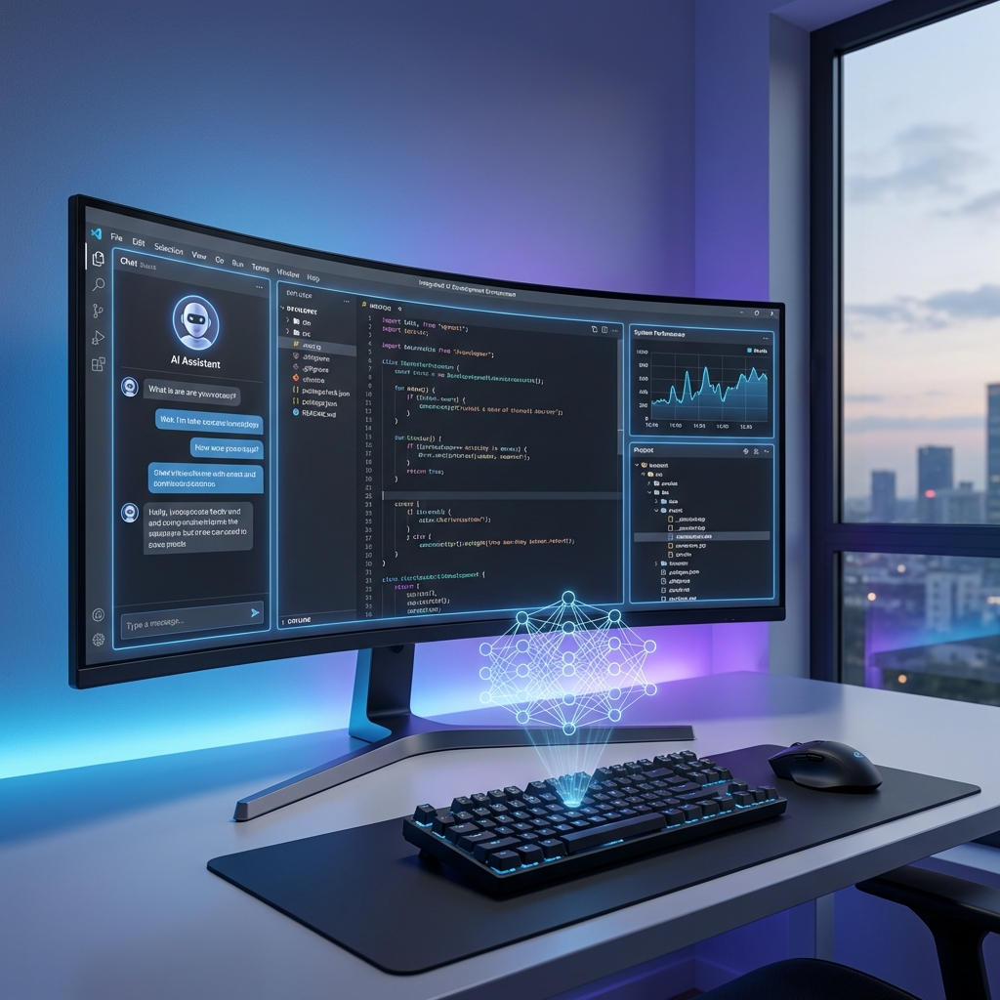

OpenAI is done being a chatbot company. Reports emerged this week that the company plans to consolidate ChatGPT, its Codex coding platform, and an internal AI-powered browser called Atlas into a single desktop application—a "superapp" that would transform how users interact with AI across their workflows.
The move represents a strategic pivot. Since ChatGPT's launch in 2022, OpenAI has been primarily a consumer-facing company—hundreds of millions of users, viral growth, mainstream cultural penetration. The superapp strategy signals a shift toward enterprise and developer markets, where the real money and lasting competitive advantage live.
What the Superapp Includes
The proposed application merges three distinct products into one integrated environment:
ChatGPT — The conversational AI that started it all, now with enhanced capabilities for document analysis, research, and complex reasoning tasks. In the superapp context, ChatGPT becomes the orchestration layer—the interface through which users direct the other capabilities.
Codex — OpenAI's coding assistant, recently acquired through the Astral deal (bringing uv, Ruff, and other Python tools into the fold). Codex in the superapp isn't just a code generator; it's a complete development environment with integrated debugging, testing, and deployment capabilities.
Atlas — The wildcard. Atlas is an AI-powered browser that OpenAI has been developing internally. Think of it as a web browser where AI doesn't just read pages—it understands them, extracts information, fills forms, navigates complex web applications, and integrates web data directly into your workflows.
The Integration Vision

Individually, these are useful tools. Integrated, they become something more powerful: a complete AI-native workspace. The vision is that you could research a topic in Atlas, have ChatGPT analyze and summarize the findings, then have Codex build a working prototype based on that research—all within one application, with shared context and seamless handoffs between capabilities.
OpenAI is essentially building the operating system for AI-augmented work. Not an OS in the technical sense, but a platform layer that sits above traditional applications and orchestrates AI capabilities across your entire digital workflow.
Why Now?
The timing isn't accidental. ChatGPT's explosive growth has plateaued; the low-hanging fruit of consumer adoption has been picked. Meanwhile, competition is intensifying: Claude, Gemini, and a host of specialized AI tools are eating away at different parts of OpenAI's market.
The superapp strategy is about deepening engagement rather than broadening it. Instead of hundreds of millions of casual users, OpenAI wants millions of power users who depend on its platform for their daily work. Higher value per user, stronger lock-in, more defensible competitive position.
Mobile Stays Separate
Interestingly, OpenAI plans to keep the mobile ChatGPT app separate. The superapp is desktop-only, at least initially. This reflects a realistic assessment: mobile is for quick queries and casual interactions; serious work happens on desktops with keyboards, large screens, and multiple windows.
The separation also makes technical sense. Desktop operating systems offer more integration capabilities—deeper OS hooks, access to file systems, ability to control other applications. The superapp needs those capabilities to deliver on its promise of seamless workflow integration.
The Platform Play
Perhaps most significantly, the superapp creates a platform for third-party extensions. OpenAI has been moving toward an app ecosystem, allowing developers to build on top of ChatGPT. The superapp extends that concept: not just plugins for a chatbot, but integrations that span research, coding, and web interaction.
For developers, this creates a massive opportunity: build tools that plug into the dominant AI workspace. For OpenAI, it creates network effects: the more tools integrate with the superapp, the more valuable the superapp becomes, the more users adopt it, the more developers build for it.
OpenAI started as a research lab, became a consumer phenomenon, and is now positioning itself as an enterprise platform. The superapp is the manifestation of that evolution. Whether users embrace an all-in-one AI workspace remains to be seen—but OpenAI is betting its future that they will.